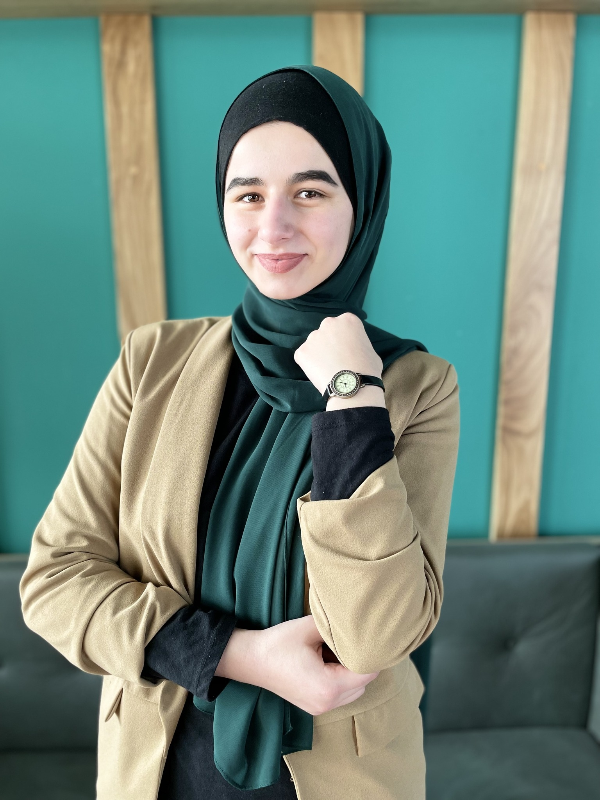

Posted by: Ilma Ogresevic on 27.06.2022
About IUS
Founded by the Foundation for Education Development Sarajevo, IUS was inaugurated in the academic year of 2004/2005. It is located in Sarajevo, the capital of Bosnia and Herzegovina.
The vision of IUS is to become an internationally recognized institution of higher education and research and a centre of excellence and quality through the shared efforts of the founders academic and administrative staff, students and all stakeholders.
IUS aims at becoming the major hub in Balkans for bridging the East to the West as a leading international institution of higher education and research centre with comprehensive excellence and quality whose students are lifelong learners, inter-culturally competent and well-developed leaders in socio-economic development of societies.
Aspiration of the International University of Sarajevo is to become widely recognized as the best university in Bosnia and Herzegovina and in the region, and a model university for the interweaving of liberal education and fundamental knowledge with practical education and impact on societal and world problems.
Mission
The mission of IUS is to produce science, art, and technology and present it to the benefit of humanity; to educate free-thinking, participating, sharing, open-minded individuals who are open to change and improvement and who have the ability to transform knowledge into values of importance for themselves and the community.
International University of Sarajevo (IUS), with its identity as an international institution of education and research is cooperating with universities in the region and in other countries in order to provide a peaceful and comfortable atmosphere of learning for students from a wide geography.
Education
IUS consists out of 5 faculties:
- FENS - Faculty of Engineering and Natural Sciences
- FBA - Faculty of Business and Administration
- FASS - Faculty of Arts and Social Sciences
- FLW - Faculty of Law
- FAD - Faculty of Education
IUS Offers multiple benefits for their students:
- Exchange programs:
- Erasmus+
- Mevlana
- Free mover
- Double diploma programs:
- Architecture
- Mechanical Engineering
- Electronics and Communications Engineering
- Economy